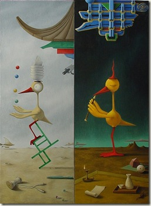
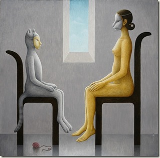
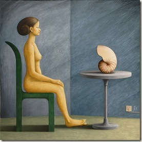
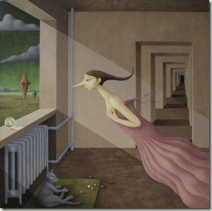

周五记
11月5号，周五，非工作日。
1
上午带妈妈去东直门，一起在华兆益生做体检。
到家时，看Li还有一小时就从单位回家吃饭，赶紧更新一篇技术博客（英文）。最近想整整英文，这些博客权当练手，找找感觉。
一路上看到银杏，满树金色的叶子。
2
下午去奥体中心，在新概念母婴俱乐部听讲座。
出来时在那里买了一册鲍秀兰教授的《0～3岁：儿童最佳的人生开端》。
{kind=link}
3
从奥体中心出来是4点。想去五道口转转。
奥体中心，8号线，北土城下，转10号线，知春路下，转13号线，……噫，不对劲，怎么感觉越走越远？
坐过站了。从上地下车，到对面，上13号线，折回五道口。
这一路地铁，也就把刚买的书给翻完了。
4
在万圣书园对面的豆瓣书店，买了三本书回家，已经是晚上六点多。冲动消费，我得想如何说服我家夫人和我自己，干嘛要买这些书：
1）Chants DemocraticNew York City and the Rise of the American Working Class, 1788-1850 by Sean Wilentz, Oxford Unversity Press, 1984
{kind=link}
回家google一下，这书还真是美国劳工研究的经典之作。但刚才在书架前，我对该书及其作者是一无所知。但还是买下来了，没什么特别的理由。
但说动机不足，铁定通不过。拣回些当时心里的微妙想法：
- 这书看着素净。
- 这书名看着学术。
- 这是历史书。我好久没读历史了。
- 关键词：美国
- 时间是18、19世纪。那时美国劳工史，或许可以来反照下我们的当今。
看，这书是非买不可了。
2）[法]邦雅曼·贡斯当《古代人的自由与现代人的自由》（阎克文等译教，上海人民，2003）
{kind=link}
这本书理由似乎充分些。首先是伯林，我们都熟悉他关于“两种自由”的论述。看，这里也有两种自由，古代人的和现代人的。还有，我俯下身对小家伙说：“这书的作者是法国人，你妈妈学的就是法国文学，……”
……剩下的一个问题就是，现在干嘛要看这种书？我地铁里现就两种书，育儿经与数学/统计学。——看，这理由（“匮乏说”）也够充分了吧？读完贡斯当，再回去读伯林。
3）[英]威廉·燕卜孙《朦胧的七种类型》（周邦宪等译，中国美术学院，1996）
{kind=link}
这本书，说实话，说服自己都难。封面差（粉的，怎么看都像婚前教育书），有错别字（首先封面上，就把“朦胧”ambiguity拼成ambigutity了），——这两点，足以枪毙它7次了。一些买回家的理由：
- 作者是英国人，但却是中国人民的好朋友；他在北大西文系教过书。
- 作者是为数不多的我能够叫出名字（而且只是中文名字）的西方学者。
- 关键词：朦胧。呵呵，《朦胧诗选》。
- 关键词：七种类型。呵呵，七种武器。
- 这书是谈论诗歌修辞手法的。——这理由太生硬了说起来，却是当时买单主要的推动力量，噫。
教条主义
作为新一代教条主义老爸，我时刻关注各种科技文献来修炼带小宝宝的技能和意识。比如，美国国民经济研究所NBER刚发布了一篇工作论文，赶紧下了学习一下：The Benefits of Breastfeeding Across the Early Years of Childhood (by Clive R. Belfield, Inas Rashad Kelly)，关于母乳喂养的经济学（实证）研究。——当然，结论没什么意外，母乳喂养比配方奶喂养就是好。
2010，精彩刚刚开始
周五，中午从上海回来，赶到了家里的午饭，接着去航天桥参加幼教培训。晚上回来查邮件，更新博客；
周六，上午人大西门，又一场幼儿健康讲座。下午朝阳，方鹤画展；
周日，今天，上午去天坛，中检所，下午三点回家吃饭，接着去世纪城，与Li一起去拜访老师。
晚上回家泡脚。明天就是周一，十一月一号，头脑中乎乎又是崭新的开始。这年还有整两月，有朋友就开始贴出2010年的回顾展。还有两月，这一年期待的精彩，才刚刚开始。
方鹤画展
下午去朝阳区酒仙桥798看方鹤个展，展出的是她近3年来创造的24幅油画。她说平均每年作10幅。这次个展，表注2010年画的就有14幅，成果丰富的一年了。
这是第一次看当代画展。我不懂油画，但看得还比较用力。拿着方鹤送的画册（三联版几米漫画书般大小），一个个跟展品对照，就想看看真迹到底有什么不一样的地方。——不知道行家怎么观看，这样的练习至少让自个注意力更集中。看着展品，才更能确定，这些油画还真都是手画出来的。看到纹理的蜿蜒散布，画布的粗糙起伏，就知道，图片可以PS出来，这些挂在墙上的东西真个是一笔笔在真实的布面里做出来的。
有两种表达方式一直让我着迷和不解，绘画和音乐：我是完全不知道它们是如何从无到有出来的（其他的，比如雕塑，我捏过泥人，所以不会觉得它有多么抽象，大不了技巧比我高一千倍——一万倍也没问题，差距都是有数的）。虽然问过方鹤她如何作画，大脑还是建立不起直观的印象——还是说说方鹤的油画。有人说艺术不可言说，这样的观点我是大大的不赞同。不可言说，通常都是因为个体语言的贫乏。虽然不懂，还是想说几句，贴图为主。
超现实主义
 (日与夜 the day and the night)
{kind=link}
 （face to face-mask 面对面之面具）
{kind=link}
在画册的自述里，方鹤提到她的超现实主义风格。超现实主义是个含糊的词，跟其他被冠以“主义”的风格一样，在不同的语境下有不同的的含义。方鹤的超现实主义，在我的理解里，是取童话、梦幻、想象力等含义，而没有其他超现实主义风格中的怪诞、恐惧、狂乱等元素。她的画里有大量的想象、变形，但都非常宁静优雅，至少不是我从超现实主义文学作品中理解的超现实主义风格。
女艺术家
 （face to face -shell 面对面之壳）
{kind=link}
有些作家喜欢用第一人称，甚至干脆把自己写进小说。我不知道方鹤是不是有时候也拿自己作为自己作品的原型。这是让我好奇的问题，看方鹤的画已有一年多，这次是第一次见她。我知道的，上世纪有个墨西哥女画家，Frida Kahlo，就喜欢画自己，她的自画像非常有名。
（猫公月夜鼓琴图）
{kind=link}
 （calling from the sky 空中的呼唤）
{kind=link}
在方鹤的作品里，只有几个有限的男性元素，比如猫。
文化
{kind=link}
{kind=link}
第一次对方鹤的画作印象深刻，是看了她的这只唐吉诃德鸟，交错着中西方文化的元素，却又非常精致协调，赏心悦目。个人被触动，还有一个原因，就是我们的教育背景，都有中西方文化的碰撞或交融（方鹤的这些画，仿佛就是为我们所作）。
父亲
读到北岛的一句诗（《给父亲》）：
你召唤我成为儿子，
我追随你成为父亲
说的是“长大后我又成了你”。现在满是这种承上启下的、易感的情绪。
父亲。
由于我出生后,父亲就长期在外工作,
当我们一家团聚,我已经长大,
所以我们一直很少说话；
当我成家立室,搬出来住,
我跟父亲的关系又再生疏,
每逢我打电话回家,若是他来接
他会像一个接线员,说声“等等”
便叫母亲来听,尽管我知道
我们彼此都怀着难言的爱。——黄灿然《亲密的时刻》
医学歧视、虎娃、Harvard v.s Yale
1.
Grytten, J., Do expert patients get better treatment than others? Agency discrimination and statistical discrimination in obstetrics, Journal of Health Economics (2010), doi:10.1016/j.jhealeco.2010.10.004
看了一篇卫生经济学方面的论文，题目唤作“医学专家是不是得到了更好的医疗待遇”，拿产科做例子，说像产科大夫、助产士和医生等专业医学人士比非专业人士得到了更好的医疗待遇。从歧视模型来看，医生对专家型病人更好，是因为专家型病人能够跟医生有更好的沟通。而从代理理论来看，医生更倾向于向非专家病人而不是专家型病人隐瞒信息。
这大概也能解释，为什么我们这些非专家型家属，也要尽量去查医学术语、指标之类，图的就是不要被医生歧视得太厉害。
2.
欢迎来到那美克星！
屋里把小家伙的小床摆上了。
迎接虎娃降生，教条主义/本本主义的老爸，我，口号都想好了，但还有一本书没有看，《郑玉巧育儿经》之婴儿卷。下周去上海，争取在地铁、公车、飞机、出租车和宾馆里把它读完（上次在上海读完的是《不会说话的孩子想“说”什么》）。
读书读书。小家伙年底光临，有要毕业的感觉。
3.
Yale? Are you serious? Yale?
又一次提到曼昆。有人问他，要是麻省税高，考不考虑离开哈佛，去稅低一点的康涅狄格，耶鲁。曼昆就这么调侃了一句。很好玩。在中关村，我们有无数这样的笑话。
42区；急救
晚上在一个（朋友的）朋友的创业项目，42区，注册了一个账户：http://42qu.com/-10005439。这个网站的一个特点是给自己的时间估个价钱。作为一个拿SAS讨生活的程序员，我就给了两个SAS的版本号（9.1.3和9.2.0）。想问张沈鹏一个问题：为什么我输入9.2，显示的却是貌似更精确的9.19？
今白天没有干活，整一天都在接受北京红十字会的急救培训。终于在一个塑料模特身上尝试了一套心肺复苏(CPR)程序，是个让人身心疲惫的活。
这点小伎俩不敢教人。一个小知识，着急时，北京除了北京急救中心的120可以打，还有一个北京红十字会的999。
理解孟子
这些天在地铁里也翻些《孟子》。以前不太读孟子，觉得他爱说话又不讲逻辑。现在想想，大概是精神气质的原因：不需要讲太多逻辑，只要觉得、认为仁者无敌，虽然迂远而阔于事情，还是会自觉地充满浩然之气。
换在今天，这大概叫一种被称为是幼稚的、单纯的理想主义。
说些GDP
最近一些朋友在twitter分享这段话：
美国经济学家曼昆曾引用前总统肯尼迪弟弟、参议员罗伯特·肯尼迪的话说：“(GDP)并未考虑到孩子的健康、他们的教育，或他们游戏的欢乐时光;它既未包括我们的诗歌之美，也不能反映可贵的婚姻稳定;它既不反映公众的智慧，也不包含公务员的廉正。”
你还能发现它们在网络上很流行。不知道是不是因为觉得中国GDP太多，反正我们周围有一股轻视甚至敌视GDP的味道。一位网友给我之前那篇《看图说话：2010年第一课》留言说：
……
而且，GDP不是衡量大国强国的唯一标准~更不是衡量人民幸福度的标准……
红色加粗字体是我加的。在网络传播的这句话中提到了曼昆，但明显是断章取义。在叙述GDP的一章习题里，曼昆让学生评价参议员罗伯特·肯尼迪的这段话(Macroeconomics by Mankiw, 5th, P39)：
[GDP] does not allow for the health of our children, the quality of their education, or the joy of their play. It does not include the beauty of our poetry or the strength of our marriages, the intelligence of our public debate or the integrity of our public officials. It measures neither our courage, nor our wisdom, nor our devotion to our country. It measures everything, in short, except that which makes life worthwhile, and it can tell us everything about America except why we are proud that we are Americans.
参议员的演说词很有煽动性。但曼昆接着也有一个“但是”，他提到过GDP是经济学家能够提供给大众的最好的礼物。这道题的一个参考回答是这样的：
These imperfections in the measurement of GDP do not necessarily reduce its usefulness. As long as these measurement problems stay constant over time, then GDP is useful in comparing economic activity from year to year. Moreover, a large GDP allows us to afford better medical care for our children, newer books for their education,and more toys for their play.
GDP不能够衡量很多东西，但这并不妨碍它是衡量经济变动的一个好指标。GDP的妙处，大概要超过你的想象。
1. GDP和人均GDP
或有人看不上中国这30万多亿人民币的GDP（2008），说，这个数字，除以13亿就没啥啦。这位说的是人均GDP的概念。比起GDP来，人均GDP当然是一国福利的更好指标。但它们常常说的是同一个东西，因为在短期里，人口的增幅一般不会太大，GDP的增长通常就意味着人均GDP的增长。
拿中国说事。2008年30多万亿人民币的GDP，就意味着两万多元的人均GDP。什么概念？人人都是万元户了（平均意义上，还记得万元户时代吗？）。换成美元，2008年的人均GDP是3000来美元，2003年是1000美元，五年涨两倍。
为什么中国现在还不够好？一个表现就是人均GDP太少，也就是GDP太少。所有能够增加人均GDP的举措，都能够增加GDP（又一次假设人口规模不变。中国13多亿人口，人均GDP的提高，只能依靠提高分子）。
2. 数字靠谱吗？
或有人说中国GDP的最大贡献者是国家统计局，并怀疑数字有夸大之嫌。这也是一个误解了。实际情况是，统计局还低估过中国的经济容量。
3. 被富裕
被富裕，这让些人不高兴。GDP只衡量经济总量，分配是另一个经济或政治议题（而且政治的意味浓些？）。 这里，亚当·斯密或许能够给广大民众信心：
http://li-and-jiang.com/blog/2010/05/26/ceremony-disintegration/
又，GDP就一个中型的词，实在没必要跟它过意不去。
公车上书之数学与统计书
{kind=link}
地铁读书，可以小说，也可以数学。最近在读一批数学与统计书，大致想不让自个的大脑发锈。具体书目，丢在我那（所谓）技术博客里：
有一本拓扑书，也应着头皮读了它的第一章，关于集合与逻辑的。这其实与拓扑无关。
当鸟沉睡之时——方鹤个展
{kind=link}
（a seven strings zether player plays in a moonlight 猫公月夜鼓琴图）
{kind=link}
去年这个时候，我在豆瓣关注一位叫方鹤的画家。她的作品充满了我需要的那种成年人的想象力——要做爸爸了，我希望我自己的想象力能够跟小家伙的想象力一样瑰丽多彩，但又有成年人应有的识见和品位。简单说，是写童话的成年人的境界。方鹤的画，给我这些期待和惊喜。
月底方鹤要在北京办个展，各位有兴趣不妨过去看看。我对艺术流派一窍不通，想过去看看，就图个赏心悦目:
当鸟沉睡之时——方鹤个展
时间:2010-10-26 至 2010-11-19
开幕式：2010-10-30 15:00
地址:世纪翰墨画廊,北京市朝阳区酒仙桥路2号798艺术区东街11号高台阶厂库D08
010-5978 9915
关注诺贝尔
今年的诺贝尔经济学奖颁给了三位，Peter A. Diamond, Dale T. Mortensen, Christopher A. Pissarides，表彰他们在失业理论方面的贡献。其他两位一点都不熟悉，Diamond的世代交替模型在宏观经济学里学过一点，然后他的搜寻理论，在微观经济学里学过一点。都一点一点，这大概能解释一些，为什么现在我成为一个程序员。
预测模型
模型的功能有两个，解释与预测，而且通常难以兼顾，故模型也可以分为解释性模型和预测性模型。
大多数的经济学理论都是解释性模型，比如，很多漂亮的模型对上个世纪二三十年代的大萧条提供了令人信服的观点，但它们（放在几年前）对预测次贷危机毫无建树。当然，现在又有不少理论解释次贷危机，一样头头是道，令人叹服。
{kind=link}
类似地，预测效果好的模型的解释能力一般也比较差。最近有名的一个预测性模型是章鱼保罗方法，在预测2010年世界杯方面战绩非常好，预测成功率远远高于高盛、摩根大通、瑞银集团和丹麦银行的定量分析师们建立的世界杯模型。——这就是某些预测性模型让人抓狂之处，它成功地预测了未来，你却根本不知道为什么（它也不告诉你为什么）！
——在生活博客上扯了这么多关于模型的废话。转到真正的生活，有无数亲朋好友提供了丰富多彩的模型预测我家虎娃的性别（这些模型大伙一定不陌生）。我妈妈也有理论贡献，而且不只是一个，是两个。
妈妈理论一：胎动左边频繁的为男孩，右边频繁的为女孩。——唉，妈妈，这不是传说中的男左女右吗？
妈妈再观察。根据Li的反馈，貌似根据她的理论，虎娃将是女宝宝。看，这个理论不能够涵盖所有的情况，我妈妈再提出一个补充理论：
妈妈理论二：今年作兴生男娃，比如某某生了一个男孩，某某某又生了一个男娃，某某某某……
根据这个理论，虎娃又将是男宝宝了。无论怎么样，我妈妈的binary model终将获胜。理论万岁！
数字化厨师
作为鲁棒菜系的创始人，本人炒青菜讲究以下4个流程：
- 油
- 菜
- 盐
- 出锅
晚上把青菜端上桌，接着折回厨房，就听到Li大呼：“老公，青菜忘放盐了吧？！”这怎么可能？！这道菜我可是完完整整地用了4个步骤的。
回餐桌查看，原来当时灵光一闪，第3个步骤时放水淀粉入锅了，接着便是第4个步骤出锅。盐就这样被精细的数字化大脑给忽略了。
爱情小说
“亲爱的，我有一个模型，在这个模型里，出轨偷情将是不可能的。”
我的确有这么一个经过充分论证的模型，但不想把它写进论文里。我想把它写进小说，一部爱情小说。
这几天窝在家里想鼓捣出一篇会议论文。翻来覆去写不了几个单词，大脑就开始浮想联翩了，无聊的论文咱不写了，改用母语写一部小说吧，就爱情小说。为什么是爱情小说？
有个有趣的话题，“爱情存不存在？”作为一个乐呵呵的已婚男人，我不会轻易就这话题发表评论。但作为一个娴熟的奎因式的逻辑实用主义者，我将会运用罗素的“摹状词”理论分析这个论题——我说的是在小说里。这部小说，名字就叫做《爱情摹状词》。
幸运的是，根据爱情的摹状词理论，即使现在（我的小说还没出来）“爱情存不存在？”这个命题没有得到解决，我们还是可以自如地运用“爱情”这个词汇。爱情是个奇妙的东西，一旦被命名，它可能就消失得无影无踪。比如，男甲和女乙在一起，如此如此，这般这般，总之作为局外人你看上去觉着应该是“爱情”，——然后，男甲总结陈词道：“Daring，这就是爱情。”或者“Daring，我们谈的正是爱情。”——完了，词汇一旦浮出水面，意义就丢了。这么个奇妙的东西，值得用笔尝试一下，看看自己能不能把它给说出来。
—————-
一个小调查：
1）你是不是想读一部小说呢？如果是，接下一题。
2）如果这是一部爱情小说呢？如果是，接下一题。
3）如果这部爱情小说还出现了“模型”这个词呢？如果是，接下一题。
4）如果这部爱情小说还出现了逻辑理论呢？
公车上书（九、十月）
翻书效率，现站在地铁车厢里，已经远远超过坐在椅子里或沙发里。闹市，拥挤的车厢，反而生出一股清静和恒心，由着自己把数百页的印刷品一页页翻过——在地铁里，没有比阅读更惬意的事情，但在家里，阅读只是无数的选项之一。
1. Child 44 by Tom Rob Smith, Grand Central, 2008
悬疑小说，主题是苏俄时期的谋杀案，主人公是MGB（即后来的KGB，克格勃）一名军官，为人正直，同时遭同事陷害，书中主要的看点是他与自己妻子以及兄弟之间的冲突。——对这么一本拥有好莱坞全部要素的小说来说，再剧透就没意思了。两大看点：小说本身的悬念、MGB与苏联。
这本书是楚楚可小姐去年回国时落我们家的，大概是我看得最顺畅的英文小说。作者1979年出生，用的是一种类似与国际英语那样的广大群众都很喜欢的英语。
2.保罗·豪伶格《不会说话的孩子想“说”什么》（林义华译，北京：金城，2010）
小齐同学送我们的书。上次上海出差时在机场与宾馆里看完的，又一本关于小孩子的书。这书的第一句是：
看着别人家的新生儿，似乎都很乖巧听话，就像刚出炉的小面包，松软喷香，……
What babies say before they can talk?这本书提供了婴儿情绪的9个特征（好奇、开心、惊奇、苦恼、生气、害怕、羞愧、恶心、厌恶），以方便父母们察言观色，按图索骥，——对我来说，这些都不是重点。对父母而言，教小孩是个很困难的事。比如，无论父母本身如何，大多会教育小孩要有一些“正面的”特性，比如有礼貌、懂事、乐观等等——而这些讨人喜欢的、脸谱化的特征，本身就是很多父母所不具备的。而如果父母不具备这些特征，对小孩来说，它们也只是一些抽象的条目而已。——这里我不是说小孩教不好，庆幸的是，除了父母，小孩还有很多渠道学到“正面的”东西。
到最后，教育小孩就是一个教育自己的过程。跟老师一样，这都是需要“资质”的。
3. 邓广铭《辛弃疾传·辛稼轩年谱》（北京：三联书店，2007）
中国古典诗词是一个很个人化的文体，所以吃蛋之余最好也要知道些下蛋的鸡。前些日子买来邓广铭的《稼轩词编年笺注》，现在觉得还是要购入些作者传记，多了解些作者，也就能多了解些作品。
辛弃疾是一位于千军万马中取敌军首级的豪杰人物。他曾写过几句话祭奠朱熹：“所不朽者，垂万世名；孰谓公死，凛凛犹生”。也非常适合用在他自己身上。
4.冯至《杜甫传》（天津：百花文艺，2007）
这些传记都是上次一起买的。诗人冯至为诗人杜甫做传，是再好不过的一件事情，美中不足的地方是，这本传记“现实主义”的时代特征稍明显了些。
5.李长之《李白传》（天津：百花文艺，2010）
这部传记倒是建国前写就，读起来疙瘩会少些。世人“李杜”并举，从个人交往来看，杜甫终生惦记着李白，而对李白而言，杜甫只是他人生的一个过客而已。
6. Marcus Cunliffe. The Literature of the United States, 上下卷，方杰译，中国对外翻译出版公司，1985
中英文对照，心急了些，一口气把中文部分读完了。
7. 龙应台《亲爱的安德烈》（北京：人民文学，2008）
上次读了《孩子你慢慢来》（龙应台，文汇，2005），觉着不错，就再买来这册与Li一起看看了。很好的关于母子沟通的书。
大概是母亲写的书吧，其中一些地方我觉着“矫情”，不利于培养孩子的豪迈之气。比如，P.41：
至于“玩”，你知道吗，我觉得不懂得“玩”，确实是一种缺点。怎么说呢？席慕容阿姨（记得吗？那个又写诗又画画的蒙古公主）曾经说，如果一个孩子在他的生活里没接触过大自然，譬如摸过树的皮、踩过干而脆的落叶，她就没办法教他美术。因为，他没有第一手接触过美。
开玩笑对Li说，我从小摸过、剥过无数“树的皮”，也踩过、扫过、烧过无数“干而脆的落叶”，但席慕容阿姨就是没办法教我美术。大自然是生活的一部分，至少对男孩子来说，没必要这么一惊一咋。
虎娃和虎爸的对话一
虎爸每天晚上都要和小宝交流一番，然后以小宝的“全球代言人”身份进行自己和小宝的对话，像模像样，不亦乐乎。
这段时间是婆婆在这边照顾，本来我就嘴比较刁，这段时期可能尤甚，总是吃得不爽。今天晚上，我告诉虎爸小宝这两天好像长得特别快，于是虎爸就和虎娃开始对话了：
虎爸：小宝啊，你是不是在妈妈肚子里乖乖地长啊？
虎娃：是的～是的～
虎爸：那你可要加油了。你要让你妈妈多吃点东西，知道吗？
虎娃：那你让你妈妈多做点好吃的哇～
虎爸：（一脸怪相，又得意又气急败坏的样子）这个小家伙！
财迷老爸
一日和老公聊天，问如果宝宝长得不漂亮怎么办啊？老公说，我们的宝宝怎么会不漂亮呢，它以后可是要自己赚奶粉钱的啊，然后就煞有介事地凑近我的肚皮，开始问宝宝它是愿意上杂志封面还是愿意代言奶粉广告，还和宝宝讨论起赚的钱怎么分的问题，唉。
家里有个可爱的雪人存钱罐，每天挺着大肚子站在书架上看着我们微笑。大概16周的某一日，老公问我宝宝有多大了，有没有雪人存钱罐那么大。我说差不多了啊。老公就说，那小宝宝是不是也肚子里装满了钱呀？
唉，小宝宝，你的老爸真是个财迷老爸呀。
妈妈写于虎娃25周8.24
宝宝，今天你就25周了哦～恭喜恭喜～
今天上班的时候，坐着的姿势，也明显地感觉到宝宝在肚脐的右上方动，才恍然意识到，这会儿宫底已经在肚脐上4、5厘米的位置了。之前每次抚摸宝宝，都习惯用手在肚脐下方的那一小片区域摩挲，现在要把整个突起的小肚子都抚摸到哦～
妈妈最近感觉小宝长得特别快，因为妈妈胃口突然变得奇好，经常晚上9、10点还要加餐，而且还是板烧鸡腿堡或者蛋糕之类的硬货。妈妈真开心小宝在努力地长大。看着妈妈越来越壮实的胳膊腿，爸爸只好每次都祈祷说：但愿吃下去的东西都被小宝吸收了。嘻嘻。
不过妈妈要反省一下，对当下的生活总是不够专注，这点你爸爸早就批评过妈妈了。比如明明怀着小宝，还每天愁着想以后个人发展的问题。不是妈妈不疼小宝哦，而是这个问题一直困扰妈妈，所以妈妈总是很焦虑。不过，妈妈决定不再那么不着边际地发愁了，每天努力吃好，睡好，做好手头该做的事情（比如十月份的考试啊），多花点时间陪小宝，好吗？